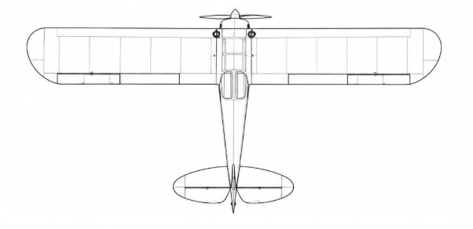

Aircraft Information
Dimensions, weights, power, and performance figures for the Monster Cub — a heavily modified Piper PA-18 Super Cub built for increased power and backcountry/STOL capability. Specifications vary between individual aircraft depending on engine, landing gear, fuel system, and other modifications. This wording is better than calling it a “current-production” aircraft because Monster Cub is not a single standardized production model. Documented Monster Cub conversions can include a 180 HP engine, reinforced landing gear, large tundra tires, a wider fuselage, and extended baggage/cabin modifications.

Built compact for the backcountry.
The Monster Cub keeps the compact proportions of the proven Super Cub design, allowing it to operate from small airstrips, rough fields, and confined landing areas. Its relatively lightweight structure and high-wing configuration are part of a design focused on STOL performance, maneuverability, and practical utility rather than maximum size.
| Aircraft type | High-wing, tailwheel, STOL aircraft |
|---|---|
| Wingspan | Approx. 35 ft (10.7 m) |
| Length | Approx. 23 ft (7.0 m) |
| Height | Approx. 6–7 ft (1.8–2.1 m) |
| Wing area | Approx. 178 sq ft (16.5 m²) |
| Seating | 2 |
| Empty weight | ~1,200–1,400 lb (544–635 kg) |
|---|---|
| Max takeoff weight | ~1,750–2,000 lb (794–907 kg) |
| Useful load | ~500–700 lb (227–318 kg) |
| Max fuel capacity | Varies by configuration |
| Engine | Lycoming O-360 |
|---|---|
| Configuration | 4-cylinder, horizontally opposed |
| Power output | 180 HP (134 kW) |
| Propeller | Varies by modification |
| Fuel type | Avgas |
| Max cruise speed | 105 KIAS (194 km/h) |
|---|---|
| Stall speed (flaps down) | 38 KIAS (70 km/h) |
| Range | 500 nm (926 km) |
| Service ceiling | 15,000 ft (4,572 m) |
| Rate of climb | 1,000 ft/min (5.1 m/s) |